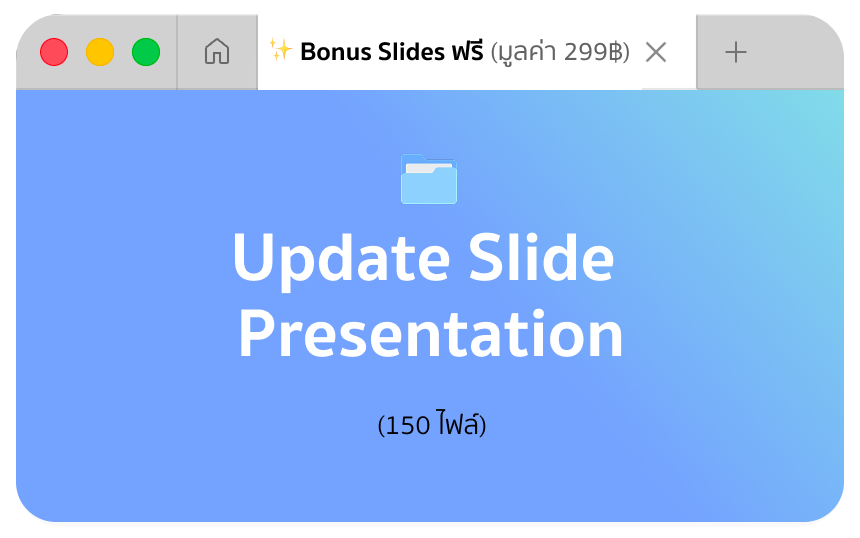

รายการสั่งซื้อ ซื้อครั้งเดียว ไม่มีรายเดือน

สไลด์ PowerPoint โหลดไม่จำกัด
6,500+ สไลด์
499฿
999฿

Bonus Slides
สั่งวันนี้รับฟรี มูลค่า 299฿
ฟรี
ยอดรวมทั้งหมด
รวม VAT 7% แล้ว
499฿
บจก. ดับเบิ้ลคราฟ์
ออมทรัพย์ · สาขาเซ็นทรัล เวสต์เกต
เลขบัญชี
229-3-98096-1
ยอดที่ต้องโอนโอนให้ตรงยอด ระบบจะจับคู่สลิปให้เอง
499.00 บาท
โอนเข้าบัญชีนี้เท่านั้น แล้วกลับมาแนบสลิปด้านล่าง
บัญชีนิติบุคคล ในนามบริษัท ดับเบิ้ลคราฟ์ จำกัด
บริษัทจดทะเบียนบจก. ดับเบิ้ลคราฟ์
7,000+ คนซื้อไปแล้ว
ตรวจสลิปอัตโนมัติจาก QR บนสลิป
แนบสลิป แล้วบอกอีเมล
กำลังแนบสลิป
แนบสลิปแล้วslip-2569-1116.jpg · 412 KB
อย่าให้มีอะไรทับ QR บนสลิป
สลิปจากแอปธนาคารที่มี QR ระบบตรวจให้เองอัตโนมัติ
รหัสดาวน์โหลดกับไฟล์ส่งไปที่อีเมลนี้
คุณใช้สไลด์กับงานสายไหน
เราเอาคำตอบไปทำชุดใหม่ตามสายที่คนตอบเยอะ ชุดที่ตรงกับงานคุณจะมาก่อน
อยากได้สไลด์แบบไหนเพิ่ม บอกได้เลย
ไม่ต้องการใบกำกับภาษี ติ๊กออกได้ ไม่กระทบการรับรหัสดาวน์โหลด
ชื่อบริษัทหรือหน่วยงาน *
เลขประจำตัวผู้เสียภาษี *
สาขา
ที่อยู่บริษัท ตามที่จดทะเบียน *
ที่อยู่สำหรับจัดส่งเอกสาร *
เบอร์โทรติดต่อ *
ระบบตรวจสลิปอัตโนมัติ ทำงานตลอด 24 ชั่วโมง ส่วนใหญ่ได้ไฟล์ทางอีเมลใน 1 ถึง 3 นาที
กดส่งสลิป ถือว่ายอมรับ เงื่อนไขการใช้งาน และ นโยบายความเป็นส่วนตัว
โอนแล้วติดปัญหา ทักแชทเพจรับสลิปแล้ว
กำลังตรวจสลิปกับธนาคาร แล้วจะส่งรหัสดาวน์โหลดไปที่
อีเมลที่กรอกไว้
อีเมลที่กรอกไว้
เลขที่อ้างอิง CT-691116-0427
1
ปิดหน้านี้ได้เลย ไม่ต้องส่งซ้ำ ระบบรับสลิปของคุณไว้แล้ว
2
ส่วนใหญ่ได้อีเมลภายใน 1 ถึง 3 นาที ถ้าไม่เจอ ลองดูในเมลขยะ
3
ทักแชทเพจ
เกิน 30 นาทีแล้วยังไม่ได้ ทักแชทเพจพร้อมเลขที่อ้างอิง ด้านบน เดี๋ยวตามให้